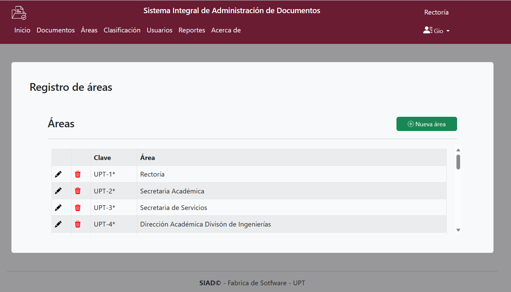
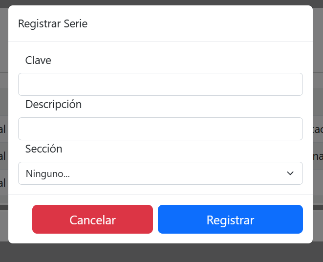

OBJETIVO Y ALCANCE
El presente manual sirve como referente para que el Coordinador Académico, pueda llevar a cabo su labor dentro del aula y con los alumnos; a través de los diferentes apartados.
La forma de desempeño y la atención brindada por parte de un Coordinador Académico influyen en la retención del alumnado.
OBJETIVO DE LA GUÍA
Conocer las herramientas disponibles en el módulo de Aula Digital, así como su aplicación dentro del aula.
1.- Ingresa al sistema y selecciona la opción Usuarios.

2.- Da clic en la opción Nuevo Usuario.

3.- Llena los campos requeridos y se muestran cuales deben ser obligatorios.
CAMPOS A COMPLETAR:
[1]Nombre:Puede ser con mayúsculas o minúsculas
[2]Apellido Paterno:
[3]Apellido materno:
[4]Teléfono de oficina:Depende el caso de donde se ubicara.
[5]Teléfono celular: Uno que este verificado
[6]Correo electronico: Proporcione el institucional
[7]Contraseña:No se comparte a
[8]Rol: Se desglosan en Archivista y Unidad Central de Correspondencia
[9]Área: Se desglosan en Secretaria, Departamentos y Dirección.

1.- Ingresa al menú y selecciona la opción Documentos
2.- Vista principal del apartado.

3.- Da clic en la opción Nuevo.
4.- Llena los campos requeridos y se muestran cuales deben ser obligatorios.
CAMPOS A COMPLETAR:
[1]Nombre:Al que se le dara el documento
[2]Descripción: Agregar algo breve o referencias importantes.
[3]Fecha limite: Esta es una fecha tentativa.
[4]Archivo: Apartado para subir el correspondiente.
[5]Rol: Se desglosan en Archivista y Unidad Central de Correspondencia
[6]Área: Se desglosan en Secretaria, Departamentos y Dirección.
[7]Secciòn: Cada una de las divisiones del Fondo, basada en las atribuciones de cada
Unidad Administrativa.
[8]Serie:Es la división de una sección que corresponde al conjunto de
documentos.
[9]Subserie:División de una sección que corresponde al conjunto de
documentos.
[9]Año:Depende del documento que se requiera puede ser de años porteriores.
[9]Folio:Numero para identificar, esta la opciòn de aitomatico.

Apartados de Modificaciones.
1.- Ingresa al sistema y selecciona icono Cesto Eliminar. Quitar el documento deseado

2.- Ingresa al sistema y selecciona icono Lapiz Editar. Hacer cambios sobre alguna información proporcionada

3.- Ingresa al sistema y selecciona icono Flechas Redirigir. Poder redigir el documento a otra area
4.- Ingresa al sistema y selecciona icono Ojo Visualizaciòn. Poder visualizar el documento en otra pestaña
5.- Ingresa al sistema y selecciona icono Impresora Imprimir. Mandar directo a la ventana de imprimir documento
1.- Ingresa al menú y selecciona la opción Àreas
2.- Vista principal del apartado.

3.- Da clic en la opción Nuevo.
4.- Llena los campos requeridos y se muestran cuales deben ser obligatorios.

5.- Si requieres hacer modificaciones selecciona icono Lapiz Editar. sobre alguna información proporcionada anteriormente.
6.- Necesitas eliminar alguna opciòn selecciona icono Cesto Eliminar. Quitar la àrea que esta en la tabla y te mandara una alerta.

1.- Ingresa al menú y selecciona la opción Clasificaciòn se despliegan 3 opciones

2.- Vista principal del apartado Secciòn.

3.- Da clic en la opción Nuevo.
4.- Llena los campos requeridos y se muestran cuales deben ser obligatorios.
5.- Si requieres hacer modificaciones selecciona icono Lapiz Editar. sobre alguna información proporcionada anteriormente.
6.- Necesitas eliminar alguna opciòn selecciona icono Cesto Eliminar. Quitar la àrea que esta en la tabla y te mandara una alerta.
7.- Vista principal del apartado Serie.
8.- Da clic en la opción Nuevo.
9.- Llena los campos requeridos y se muestran cuales deben ser obligatorios.

10.- Si requieres hacer modificaciones selecciona icono Lapiz Editar. sobre alguna información proporcionada anteriormente.
11.- Necesitas eliminar alguna opciòn selecciona icono Cesto Eliminar. Quitar la àrea que esta en la tabla y te mandara una alerta.
7.- Vista principal del apartado Subserie.

8.- Da clic en la opción Nuevo.
9.- Llena los campos requeridos y se muestran cuales deben ser obligatorios.

10.- Si requieres hacer modificaciones selecciona icono Lapiz Editar. sobre alguna información proporcionada anteriormente.

11.- Necesitas eliminar alguna opciòn selecciona icono Cesto Eliminar. Quitar la àrea que esta en la tabla y te mandara una alerta.